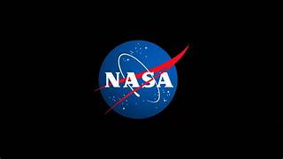

Astronomy is a natural science that studies celestial objects and phenomena. It uses mathematics, physics, and chemistry in order to explain their origin and evolution. Objects of interest include planets, moons, stars, nebulae, galaxies, meteoroid, asteroid, and comets. Relevant phenomena include supernova explosions, gamma ray bursts, quasars, blazars, pulsars, and cosmic microwave background radiation. More generally, astronomy studies everything that originates beyond Earth's atmosphere. Cosmology is a branch of astronomy that studies the universe as a whole.
Astronomy is one of the oldest natural sciences. The early civilizations in recorded history made methodical observations of the night sky. These include the Egyptians, Babylonians, Greeks, Indians, Chinese, Maya, and many ancient indigenous peoples of the Americas. In the past, astronomy included disciplines as diverse as astrometry, celestial navigation, observational astronomy, and the making of calendars. Professional astronomy is split into observational and theoretical branches. Observational astronomy is focused on acquiring data from observations of astronomical objects. This data is then analyzed using basic principles of physics. Theoretical astronomy is oriented toward the development of computer or analytical models to describe astronomical objects and phenomena. These two fields complement each other. Theoretical astronomy seeks to explain observational results and observations are used to confirm theoretical results. Astronomy is one of the few sciences in which amateurs play an active role. This is especially true for the discovery and observation of transient events. Amateur astronomers have helped with many important discoveries, such as finding new comets.
| date accomplished | event | details |
|---|---|---|
| Oct. 4, 1957 | first artificial Earth satellite | Sputnik 1 |
| Sept. 14, 1959 | first animal launched into space | dog Laika aboard Sputnik 2 |
| April 12, 1961 | first human to orbit Earth | Yury Gagarin on Vostok 1 |
| July 20, 1969 | first human to walk on the Moon | Neil Armstrong on Apollo 11 |
| Dec. 15, 1970 | first soft landing on another planet (Venus) | Venera 7 |
On July 16, 1969, Armstrong, along with Edwin E. Aldrin, Jr., and Michael Collins, blasted off in the Apollo 11 vehicle toward the Moon (see Apollo program). Four days later, at 4:17 PM U.S. Eastern Daylight Time (EDT), the Eagle lunar landing module, guided manually by Armstrong, touched down on a plain near the southwestern edge of the Sea of Tranquillity (Mare Tranquillitatis). At 10:56 PM EDT on July 20, 1969, Armstrong stepped from the Eagle onto the Moon’s dusty surface with the words, “That’s one small step for [a] man, one giant leap for mankind.” (In the excitement of the moment, Armstrong skipped the “a” in the statement that he had prepared.) Armstrong and Aldrin left the module for more than two hours and deployed scientific instruments, collected surface samples, and took numerous photographs.
NASA stands for National Aeronautics and Space Administration. NASA is a U.S. government agency that is responsible for science and technology related to air and space. The Space Age started in 1957 with the launch of the Soviet satellite Sputnik. NASA opened for business on Oct. 1, 1958. The agency was created to oversee U.S. space exploration and aeronautics research. The administrator is in charge of NASA. The NASA administrator is nominated by the president and confirmed by a vote in the Senate.
Many people know something about NASA’s work. But most probably have no idea about how many different things the agency does. Astronauts in orbit conduct scientific research. Satellites help scientists learn more about Earth. Space probes study the solar system and beyond. New developments improve air travel and other aspects of flight. NASA is also beginning a new program to send humans to explore the Moon and Mars. In addition to those major missions, NASA does many other things. The agency shares what it learns so that its information can make life better for people worldwide. For example, companies can use NASA discoveries to create new spinoff products. NASA helps teachers prepare students who will be the engineers, scientists, astronauts and other NASA workers of the future. They will be the adventurers who will continue exploration of the solar system and universe. NASA has a tradition of investing in programs and activities that inspire students, educators, families and communities in the excitement and discovery of exploration. NASA offers training to help teachers learn new ways to teach science, technology, engineering and mathematics. The agency also involves students in NASA missions to help them get excited about learning.
There are many more benefits of space exploration.The reason for human and individual nations’ investment in space exploration has dramatically shifted since the 20th century Space race. Space exploration of the late 20th century was driven by competition between the Soviet Union and the United States to achieve the first spaceflight. Now, the private sector and national governments are again investing in space exploration. However, this time they are motivated by protecting human life from catastrophic events and leveraging the resources of space.[1] Colonize outer space It has been argued that space colonization is a means of ensuring the survival of human civilization given a planetary disaster. Colonizing other planets allows for the dispersal of humans and thus increases the likelihood of survival given a planetary disaster. The availability of additional resources that can be mined from space could potentially expand the capabilities of humans and largely benefit society. Leveraging these resources and moving high polluting industries to space could reduce the emissions on Earth and ultimately lead to finding cleaner energy sources. The primary blockers to colonizing space include technological and economic challenges. Many private companies are working to make space travel more efficient in hopes to reduce the overall cost of space travel, and thus space colonization. SpaceX has been a dominant leader in this push for efficient exploration with the release of the Falcon 9, a reusable rocket. Space research The unique attributes of space enable astronauts to conduct research that could not otherwise be done on Earth, and the perspective from space looking at Earth enables scientists to gain more insight on the Earth's natural environment. Research conducted at the International Space Station aims to benefit human civilizations on Earth and extend human knowledge of space and space exploration. Currently, NASA's research at the ISS includes biomedical research, material science, technology advancement, and methods to enable further space exploration. Anti and microgravity enable astronauts to execute medical research that is impossible to perform on Earth. For example, NASA's research on new treatment options for complex diseases, such as Duchenne Muscular Dystrophy, require the use of a microgravity environment to allow the microparticles in the treatment solution to stay robust. NASA has also reported research investment in microbial vaccine development and microencapsulation of drugs for targeted and more efficient treatment delivery.
The future of space exploration involves both telescopic exploration and the physical exploration of space by robotic spacecraft and human spaceflight. Near-term physical exploration missions, focused on obtaining new information about the solar system, are planned and announced by both national and private organisations. There are tentative plans for crewed orbital and landing missions to the Moon and Mars to establish scientific outposts that will later enable permanent and self-sufficient settlements. Further exploration will potentially involve expedition and the other planets and settlements on the moon as well as establishing mining and fueling outposts, particularly in the asteroid belt. Physical exploration outside the solar System will be robotic for the foreseeable future.